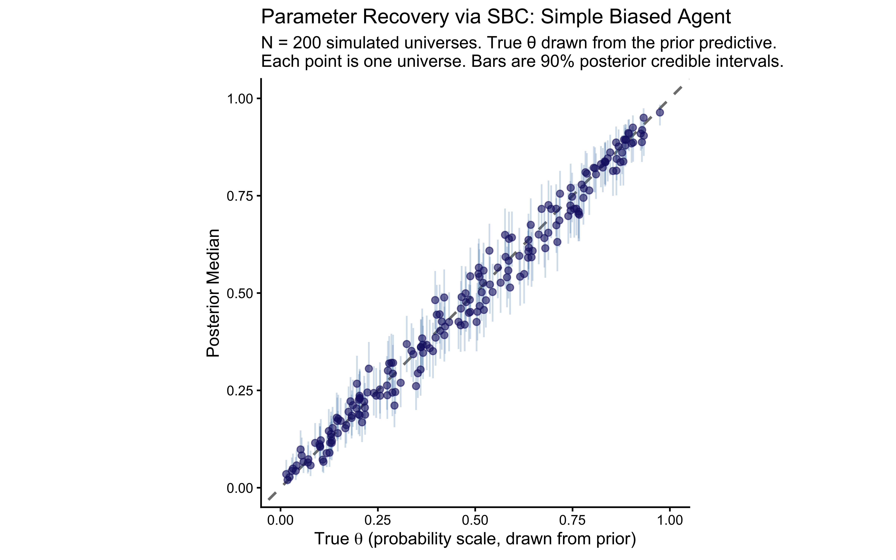
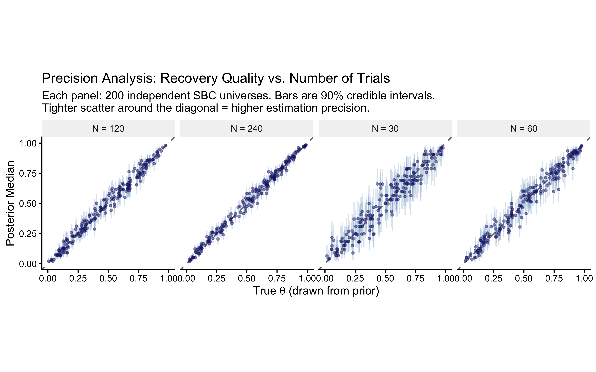
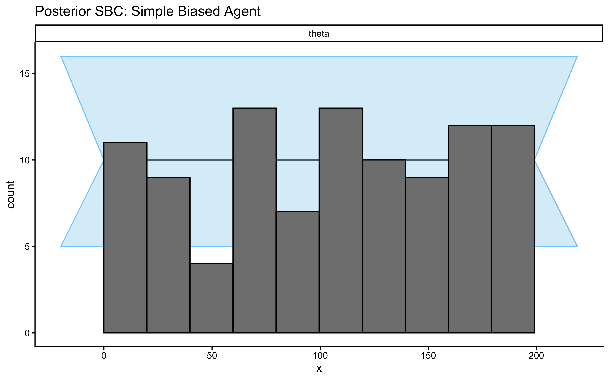
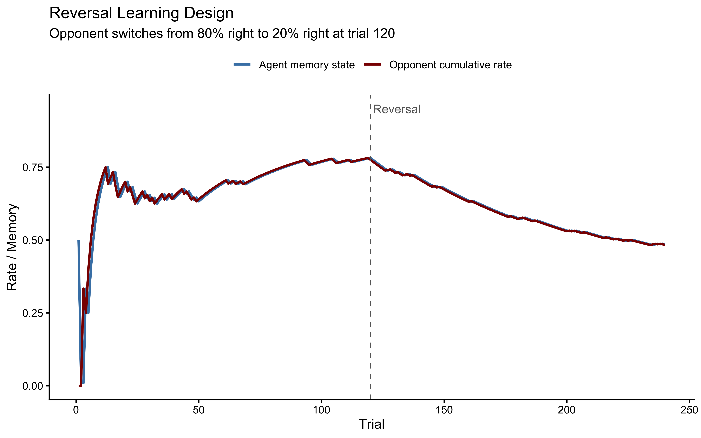
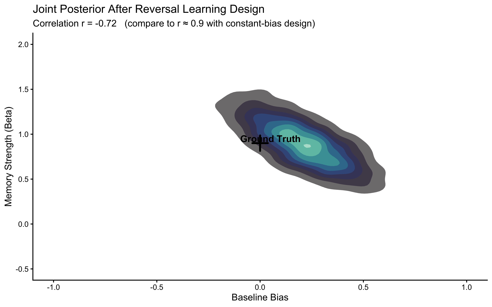

Chapter 6 Chapter 5: Assessing Model Quality
📍 Where we are in the Bayesian modeling workflow: Ch. 4 fit a Stan model to one simulated dataset. Obtaining a posterior is not the same as trusting it. This chapter is the validation gate: a six-phase battery the model must pass before touching real human data. These techniques reappear in every subsequent chapter — learn them once here, apply them everywhere.
6.1 Learning Goals
In Chapter 4, we learned how to write Stan code and infer parameters for a single simulated dataset. However, obtaining a posterior distribution does not mean the model is correct or the inference is reliable.
This chapter introduces the strict diagnostic battery required to validate any cognitive model. After completing this chapter, you will be able to:
Assess Generative Plausibility (Prior Predictive Checks): Simulate data from your model’s priors before fitting to ensure the mathematical bounds and prior assumptions are physically and cognitively plausible, that is, generate plausible behaviors.
Validate Identifiability (Parameter Recovery): Show that your model can accurately recover known ground-truth parameters across different noise levels.
Calibrate Uncertainty (Simulation-Based Calibration): Use SBC to guarantee your computational engine is unbiased and your posterior uncertainties are mathematically sound.
Perform Posterior Predictive Checks: Simulate data from your fitted model to assess whether it can reproduce key patterns observed in the actual data.
Visualize Prior-Posterior Updates: Compare prior and posterior distributions to understand how the data informed parameter estimates.
Test Robustness (Sensitivity Analysis): Evaluate how sensitive your parameter estimates are to the choice of prior distributions using both manual methods and the
priorsensepackage.
Before going into each phase in detail, here is a one-row summary of what each check does and what a failure looks like. Return to this table whenever you feel lost.
| Phase | Check | Core question | What failure looks like |
|---|---|---|---|
| 1 | Mathematical formulation | Is the Stan code doing what we think? | Model block and generated quantities disagree |
| 2 | Prior Predictive | Do the priors allow only plausible behaviour? | Simulated data saturates impossible boundaries |
| 3 | Posterior Predictive | Does the fitted model reproduce observed patterns? | Observed statistic falls in the tail of replicates |
| 4 | Prior-Posterior Update | Did the data teach the model anything? | Posterior ≈ prior; or posterior far from truth |
| 5 | Sensitivity | Do conclusions change if we tweak the prior? | Large posterior shift under small prior perturbation |
| 6 | Parameter Recovery + SBC | Can the engine find the truth? Are credible intervals calibrated? | Recovery off the diagonal; rank histogram U-shaped or skewed |
Note on terminology: In Ch. 4 we used “parameter recovery” loosely to mean fitting one simulated dataset and checking whether the posterior landed near the true value. Phases 6a–b here are the rigorous version: systematic recovery across many parameter values (6a) and formal calibration of the posterior intervals across the full prior space (SBC, 6b).
6.2 Introduction: Why Parameter Estimates Aren’t Enough
In the previous chapters, we journeyed from observing behavior (Chapter 2), formalizing strategies (Chapter 3), to fitting models and estimating parameters (Chapter 4).
But how confident are we about the model, its assumptions, the way we coded it? The model itself, the structure we assumed could be mathematically misspecified (not do what we think it does), unidentifiable (produce similar behaviors with an infinite set of combinations of parameter values), and/or simply unable to capture the data (sometimes even the data that we simulated from it!).
While rigorous Bayesian workflows can take many forms, here we structure our validations in six sequential phases, each answering a different question before we are allowed to proceed:
- Phase 1 confirms the Stan code is mathematically well-formed.
- Phase 2 (Prior Predictive) checks that our priors generate plausible data before we see any observations.
- Phase 3 (Posterior Predictive) checks that the fitted model can reproduce the key patterns in the data it was trained on.
- Phase 4 (Prior-Posterior Update) visualises how much the data actually moved our beliefs.
- Phase 5 (Sensitivity) tests whether conclusions hold under small changes to the prior.
- Phase 6 (Parameter Recovery + SBC) proves the computational engine is unbiased and that credible intervals are correctly calibrated.
This chapter executes all six phases on the simple biased agent, then repeats the workflow on the memory model — where we will discover a real identifiability problem and fix it.
6.3 Loading Packages and Previous Results
Let’s start by loading the necessary packages and the fitted model object from Chapter 4. This avoids re-running the fitting process unnecessarily and ensures consistency.
# Load required packages using pacman for efficient package management
# pacman::p_load ensures packages are installed if missing, then loads them
pacman::p_load(
tidyverse, # Core suite for data manipulation (dplyr) and plotting (ggplot2)
here, # For creating robust file paths relative to the project root (optional but good practice)
posterior, # Provides tools for working with posterior distributions
cmdstanr, # The R interface to Stan (via CmdStan)
bayesplot, # Specialized plotting functions for Bayesian models
patchwork, # For easily combining multiple ggplot plots
priorsense, # For automated prior sensitivity analysis
SBC, # Simulation-Based Calibration
future, # Parallel processing
furrr # Parallel mapping
)
# Set a default theme for ggplot for consistency
theme_set(theme_classic()) # Use a classic theme with white background
# Define relative paths
stan_model_dir <- "stan"
stan_results_dir <- "simmodels"
sim_data_dir <- "simdata"
# Create directories if they don't exist (important for first run)
if (!dir.exists(stan_model_dir)) dir.create(stan_model_dir)
if (!dir.exists(stan_results_dir)) dir.create(stan_results_dir)
if (!dir.exists(sim_data_dir)) dir.create(sim_data_dir)6.4 Phase 1: Mathematical Formulation and Stan implementation
Just as a reminder, for our Simple Biased Agent, the generative process across \(n\) trials is defined as: \[h_i \sim \text{Bernoulli}(\theta)\] \[\theta = \text{logit}^{-1}(\theta_{\text{logit}})\] \[\theta_{\text{logit}} \sim \text{Normal}(0, 1.5)\]
Notice our parameterization. By operating on the unconstrained space (\(\theta_{\text{logit}} \in [-\infty, \infty]\)) rather than the constrained probability space (\(\theta \in [0, 1]\)), we avoid boundary effects that can cause the No-U-Turn Sampler (NUTS) to pathologically bounce against parameter limits.
Stan’s default initialization draws uniformly from \([-2, 2]\) on the unconstrained (logit) space. When our models will grow more complex, this arbitrary initialization might be less than optimal and we’ll have to explicitly initialize from the prior or use multi-path variational inference (Pathfinder) if the chains struggle to start.
We will now reproduce the Stan code for the model, and modify it to include the generated quantities block. This block executes after the model has been fitted, and is very useful in our checks as we can generate and save several variables to be used in our model assessment:
the prior (e.g. for visualization in prior-posterior update checks),
simulations of model expectations from the prior only (before exposure to data) for prior predictive checks
simulations of model expectations from the posteriors (after exposure to data), for posterior predictive checks
the log likelihood for each data point, to assess how well they are captured by the model
the joint log prior, which tells us how likely the posterior is given the prior and will be used to assess the sensitivity of the posterior to the choice of priors
Note that we are adding data for the prior parameters, so we can quickly change them without recompiling the model and that we will explain the different additional variables in detail throughout the chapter.
# Stan code of the model, adding generated quantities for predictive checks
stan_model_gq_code <- "
data {
int<lower=1> n; // Number of trials (e.g., 120)
array[n] int<lower=0, upper=1> h; // Observed choices (vector of 0s and 1s)
real prior_theta_m;
real<lower = 0> prior_theta_sd;
}
parameters {
real theta_logit; // Represents the log-odds of choosing option 1 (right)
}
model {
target += normal_lpdf(theta_logit | prior_theta_m, prior_theta_sd); // prior
target += bernoulli_logit_lpmf(h | theta_logit); // likelihood
}
generated quantities {
// Create the prior for theta
real theta_logit_prior = normal_rng(prior_theta_m, prior_theta_sd);
// --- Parameter Transformation ---
real theta_prior = inv_logit(theta_logit_prior);
real<lower=0, upper=1> theta = inv_logit(theta_logit);
// --- Prior Predictive Check Simulation ---
// Simulate data based *only* on the prior distribution.
array[n] int h_prior_rep = bernoulli_logit_rng(rep_vector(theta_logit_prior, n));
// Calculate a summary statistic for this PRIOR replicated dataset.
int<lower=0, upper=n> prior_rep_sum = sum(h_prior_rep);
// --- Posterior Predictive Check Simulation ---
// Simulate data based on the *posterior* distribution of the parameter.
array[n] int h_post_rep = bernoulli_logit_rng(rep_vector(theta_logit, n));
// Calculate a summary statistic for this posterior dataset.
int<lower=0, upper=n> post_rep_sum = sum(h_post_rep);
// --- Log-likelihood ---
vector[n] log_lik;
real lprior;
// log likelihood
for (i in 1:n) log_lik[i] = bernoulli_logit_lpmf(h[i] | theta_logit);
// joint log prior
lprior = normal_lpdf(theta_logit | prior_theta_m, prior_theta_sd);
}
"
stan_file_gq <- file.path(stan_model_dir, "05_SimpleBernoulli_GQ.stan")
writeLines(stan_model_gq_code, stan_file_gq)
# Define path for saving/loading the fitted model object that includes the generated quantities
model_file_gq <- file.path(stan_results_dir, "05_SimpleBernoulli_GQ.rds")
# Generate the required data
# Load the simulation data used in Chapter 4
sim_data_file <- file.path(sim_data_dir, "W4_randomnoise.csv")
d <- read_csv(sim_data_file, show_col_types = FALSE)
# Subset data for the specific agent fitted in Chapter 4 (rate=0.8, noise=0)
d1 <- d %>% filter(true_rate == 0.8, true_noise == 0.0)
trials <- nrow(d1)
# Prepare the observed data list in the format Stan expects
observed_data_list <- list(
n = trials, # Number of trials (integer)
h = d1$choice, # Vector of observed choices (0s and 1s)
prior_theta_m = 0, # Mean of the prior for theta_logit
prior_theta_sd = 1.5 # Standard deviation of the prior for theta_logit
)
# ---------------------------------------------------------------------------
# mod_gq is compiled OUTSIDE the cache conditional so it is always available —
# for fitting, for the sensitivity analysis, and for the SBC backend.
# Compilation is fast (C++ is cached by CmdStan after the first run).
# ---------------------------------------------------------------------------
mod_gq <- cmdstan_model(stan_file_gq)
if (regenerate_simulations || !file.exists(model_file_gq)) {
# Sample from the posterior distribution using MCMC
fit_gq <- mod_gq$sample(
data = observed_data_list,
seed = 123,
chains = 4,
parallel_chains = min(4, future::availableCores()),
iter_warmup = 1000,
iter_sampling = 2000,
refresh = 500,
max_treedepth = 10,
adapt_delta = 0.8
)
# Save the fitted model object (including samples and generated quantities)
fit_gq$save_object(file = model_file_gq)
} else {
# Load the previously saved fitted model object
fit_gq <- readRDS(model_file_gq)
}6.4.1 The Mandatory MCMC Diagnostic Battery
Before we even look at a posterior distribution, we must prove the geometry of the posterior was successfully explored. We have zero tolerance for divergences. If a divergence occurs, the NUTS trajectory has departed from the true posterior manifold, indicating a biased approximation.
# Extract the summary and diagnostics from our fitted model object
fit_summary <- fit_gq$summary()
diagnostic_summary <- fit_gq$diagnostic_summary()
# 1. Check for Divergent Transitions (Zero Tolerance)
divergences <- sum(diagnostic_summary$num_divergent)
if (divergences > 0) {
stop(paste("CRITICAL FAILURE:", divergences, "divergences detected. The posterior geometry is pathological. Reparameterization required. Do not interpret these results."))
}
# 2. Check E-BFMI (Energy-Bayesian Fraction of Missing Information)
# Threshold is typically 0.3. Values below this indicate poor exploration.
min_ebfmi <- min(diagnostic_summary$ebfmi)
if (min_ebfmi < 0.3) {
warning(paste("WARNING: Low E-BFMI detected (Min =", round(min_ebfmi, 3),
"). The sampler may struggle to explore the tails of the posterior."))
}
# 3. Check for Convergence (Rhat < 1.01)
max_rhat <- max(fit_summary$rhat, na.rm = TRUE)
if (max_rhat > 1.01) {
stop(paste("CRITICAL FAILURE: Chains did not converge. Max Rhat =", round(max_rhat, 3)))
}
# 4. Check Effective Sample Size (ESS > 400 for both bulk and tail)
min_ess_bulk <- min(fit_summary$ess_bulk, na.rm = TRUE)
min_ess_tail <- min(fit_summary$ess_tail, na.rm = TRUE)
if (min_ess_bulk < 400 || min_ess_tail < 400) {
warning("WARNING: Insufficient Effective Sample Size. Autocorrelation is too high. Run longer chains.")
}6.5 Phase 2: Generative Plausibility (Prior Predictive Checks)
Why run a prior predictive check before seeing any data? Priors are not just regularizers — they are part of the generative model. A prior that assigns high probability to θ = 0.999 (choosing “right” almost every single trial) might corrupt the posterior even with 1,000 observations, and/or make the MCMC much slower. Catching an implausible prior here costs minutes; catching it throughout the fitting process might waste you much longer.
Before fitting the model, we specified prior distributions for our parameters (e.g., \(\theta_{\text{logit}} \sim \text{Normal}(0, 1.5)\)). Priors do not merely encode our initial uncertainty before seeing the data; they are fundamental constraints on the data-generating process. Prior predictive checks help us understand the implications of these choices. If we simulate data using only parameters drawn from our priors, what kind of data does the model expect before seeing any actual observations?
6.5.1 The Generative Algorithm:
To assess generative plausibility, we explicitly simulate from the joint distribution of the model:
Draw from the Prior: Sample \(S\) parameter values from their respective prior distributions. For example: \(\theta_{\text{logit}}^{(s)} \sim \text{Normal}(0, 1.5)\).
Transform to Constrained Space: Push these unconstrained values through the inverse-link function to map them to the cognitive parameter space (probability): \(\theta^{(s)} = \text{logit}^{-1}(\theta_{\text{logit}}^{(s)})\).
Simulate the Likelihood: Using these prior parameter values, simulate a replicated dataset from the data-generating function: \(y_{\text{prior}}^{(s)} \sim \text{Bernoulli}(\theta^{(s)})\).
Evaluate Summary Statistics: Calculate theoretically relevant summary statistics, \(T(y_{\text{prior}}^{(s)})\), and plot their distribution.
This protocol reveals the limits of our assumptions. We must interrogate this space: Are we inadvertently generating boundary-saturating behaviors? If our prior allows the agent to generate 120 “left” choices and 0 “right” choices with high frequency, we have likely specified a prior that is too wide on the logit scale, pushing the probability mass into the extreme tails of 0 and 1.
6.5.2 Performing the Prior Predictive Check:
We have already embedded the generative simulation (h_prior_rep) and the summary statistic calculation (prior_rep_sum) directly into the Stan generated quantities block. We will now extract these draws and visualize the geometry of our prior predictions.
# Extract the summary statistic calculated from prior predictive simulations
# 'prior_rep_sum' was calculated within the generated quantities block
draws_gq <- as_draws_df(fit_gq$draws()) # Ensure we have the draws as a dataframe
observed_sum <- sum(observed_data_list$h) # Total number of 'right' choices in the actual observed data
ppc_prior_ggplot <- ggplot(draws_gq, aes(x = prior_rep_sum)) +
# Draw the histogram of the model's prior predictions (light red)
geom_histogram(fill = "#ffbaba", color = "#ff5252", bins = 30, alpha = 0.8) +
# Add the vertical line for the actual observed data (dark red)
geom_vline(xintercept = observed_sum, color = "darkred", linewidth = 1.2) +
# Labels and theming
ggtitle("Prior Predictive Check: Total 'Right' Choices",
subtitle = "Healthy = histogram spans the full range; observed value (dashed) is not in the tails") +
xlab(paste("Total Number of 'Right' Choices (out of", trials, "trials)")) +
ylab("Frequency") +
theme_classic()
ppc_prior_ggplot
Interpretation: The histogram covers the full range of possible trial counts, centred near 60 (chance). This is what we want: the prior does not pre-commit the model to an extreme outcome before seeing any data. If the histogram were piled up near 0 or 120, that would mean our prior is effectively deciding the answer for us — a broken prior. The dashed line marks our observed data. It sits well inside the bulk of the distribution, confirming the prior does not rule out the kind of data we actually saw.
6.6 Phase 3: Posterior Predictive Checks - Does the Fitted Model Resemble the Data?
Why check posterior predictions after fitting? A model can produce a beautiful, well-converged posterior and still be completely wrong about the data. The posterior predictive check asks: if we used our fitted model to generate new datasets, would those datasets look like the one we actually observed? If not, the model’s generative structure is misspecified — regardless of what the posteriors say.
Now that we’ve examined the prior implications, let’s perform the posterior predictive check. The fundamental question of model adequacy is: Conditional on the data we observed, can the inferred data-generating process replicate the key structural features of our data?
6.6.1 The Generative Algorithm:
The algorithm mirrors the prior predictive check, but instead of sampling from the prior, we condition on the learned posterior \(p(\theta \mid y)\):
Draw from the Posterior: For each MCMC sample \(s\), take the inferred parameter \(\theta^{(s)}\).
Simulate Replications: Generate a synthetic dataset \(y_{\text{rep}}^{(s)}\) of the exact same dimensions as the empirical data, using the assumed likelihood:\[y_{\text{rep}}^{(s)} \sim \text{Bernoulli}(\theta^{(s)})\]
Evaluate Test Statistics: Calculate theoretically relevant summary statistics \(T(y_{\text{rep}}^{(s)})\) and compare them against the empirical statistic \(T(y)\).
We must interrogate these predictions critically. Our model assumes independent, identically distributed (i.i.d.) Bernoulli trials. But what if the participant exhibited sequential dependencies, such as a “win-stay/lose-shift” strategy? If so, our model might successfully capture the overall choice proportion (the sum), but it will fail catastrophically to reproduce the sequential structure (e.g., the maximum run-length of identical choices).
6.6.2 Performing the Posterior Predictive Check:
We extract the replicated datasets (h_post_rep) generated simultaneously within the Stan generated quantities block. We will then systematically compare the test statistic distributions \(T(y_{\text{rep}})\) against our empirical ground truth \(T(y)\).
# Extract posterior predictive simulations from the fitted object
# This matrix has dimensions: [number_of_draws, number_of_trials]
h_post_rep <- fit_gq$draws("h_post_rep", format = "matrix")
# Calculate the test statistic T(y) for the *actual* empirical data
observed_sum <- sum(observed_data_list$h)
# Calculate the test statistic T(y_rep) for *each* replicated dataset
# We compute the row-wise sum across the posterior draws
post_rep_sums <- rowSums(h_post_rep)
# Bundle into a tibble for strictly structured plotting
ppc_df <- tibble(
Replicated_Sum = post_rep_sums
)
# --- Graphical Posterior Predictive Check using ggplot2 ---
ppc_posterior_ggplot <- ggplot(ppc_df, aes(x = Replicated_Sum)) +
geom_histogram(fill = "skyblue", color = "white", alpha = 0.7, bins = 30) +
geom_vline(xintercept = observed_sum, color = "black", linetype = "dashed", linewidth = 1) +
ggtitle("Posterior Predictive Check: Total 'Right' Choices",
subtitle = "Healthy = observed value (dashed) sits inside the bulk of replicated datasets") +
xlab(paste("Total Number of 'Right' Choices (out of", trials, "trials)")) +
ylab("Frequency (Replicated Datasets)") +
# Add annotation for the empirical ground truth
annotate(
"text", x = observed_sum, y = Inf,
label = "Empirical data",
vjust = 2, hjust = if(observed_sum > trials/2) 1.1 else -0.1,
size = 4, fontface = "bold"
) +
theme_classic()
ppc_posterior_ggplot
ppc_overlay_df <- tibble(
Replicated_Sum = c(draws_gq$prior_rep_sum, post_rep_sums),
Distribution = factor(
rep(c("Prior Predictive", "Posterior Predictive"), each = length(post_rep_sums)),
levels = c("Prior Predictive", "Posterior Predictive")
)
)
# 2. Generate the overlay plot
ppc_overlay_ggplot <- ggplot(ppc_overlay_df, aes(x = Replicated_Sum, fill = Distribution)) +
# Use position = "identity" and alpha to ensure both distributions are visible
geom_histogram(position = "identity", alpha = 0.6, color = "white", bins = 30) +
geom_vline(xintercept = observed_sum, color = "black", linetype = "dashed", linewidth = 1) +
scale_fill_manual(values = c("Prior Predictive" = "#ffbaba", "Posterior Predictive" = "skyblue")) +
ggtitle("Prior vs. Posterior Predictive: Narrowing of Predictions After Fitting",
subtitle = "Posterior (blue) should be much tighter than prior (red) and centred on observed data") +
xlab(paste("Total Number of 'Right' Choices (out of", trials, "trials)")) +
ylab("Frequency (Replicated Datasets)") +
# Add annotation for the empirical ground truth
annotate(
"text", x = observed_sum, y = Inf,
label = "Empirical data",
vjust = 2, hjust = if(observed_sum > trials/2) 1.1 else -0.1,
size = 4, fontface = "bold"
) +
theme_classic() +
theme(
legend.position = "bottom",
legend.title = element_blank(),
legend.text = element_text(size = 12)
)
print(ppc_overlay_ggplot)
# --- Example of checking another statistic (e.g., max run length) ---
# Define a function to calculate the maximum run length in a vector
max_run_length <- function(x) {
if (length(x) == 0 || all(is.na(x))) return(0)
rle_x <- rle(x) # Run Length Encoding calculates consecutive identical choices
if (length(rle_x$lengths) == 0) return(0)
max(rle_x$lengths)
}
# 2. Calculate the empirical test statistic T(y)
observed_max_run <- max_run_length(observed_data_list$h)
# 3. Extract prior replicated matrices and compute T(y_rep) for the prior
# h_prior_rep is an S x N matrix generated from the prior distributions
h_prior_rep <- fit_gq$draws("h_prior_rep", format = "matrix")
prior_max_runs <- apply(h_prior_rep, 1, max_run_length)
# 4. Extract posterior replicated matrices and compute T(y_rep) for the posterior
# h_post_rep is an S x N matrix generated from the posterior distributions
h_post_rep <- fit_gq$draws("h_post_rep", format = "matrix")
post_max_runs <- apply(h_post_rep, 1, max_run_length)
# 5. Bundle into a strictly structured tibble for overlay plotting
ppc_run_df <- tibble(
Replicated_Max_Run = c(prior_max_runs, post_max_runs),
Distribution = factor(
rep(c("Prior Predictive", "Posterior Predictive"), each = length(post_max_runs)),
levels = c("Prior Predictive", "Posterior Predictive")
)
)
# 6. Generate the overlay plot
p_ppc_max_run <- ggplot(ppc_run_df, aes(x = Replicated_Max_Run, fill = Distribution)) +
geom_histogram(position = "identity", alpha = 0.6, color = "white", bins = 20) +
geom_vline(xintercept = observed_max_run, color = "black", linetype = "dashed", linewidth = 1) +
scale_fill_manual(values = c("Prior Predictive" = "#ffbaba", "Posterior Predictive" = "skyblue")) +
ggtitle("Posterior Predictive: Maximum Run Length of Consecutive Choices",
subtitle = "Tests sequential structure — a model assuming i.i.d. trials should still pass this") +
xlab("Test Statistic T(y_rep): Maximum Run Length of Consecutive Choices") +
ylab("Frequency (Replicated Datasets)") +
# Add annotation for the empirical ground truth
annotate(
"text", x = observed_max_run, y = Inf,
label = "Empirical T(y)",
vjust = 2, hjust = -0.1,
size = 4, fontface = "bold"
) +
theme_classic() +
theme(
legend.position = "bottom",
legend.title = element_blank(),
legend.text = element_text(size = 12)
)
print(p_ppc_max_run)
Interpretation: Both test statistics — the total count of “right” choices and the maximum run length — fall comfortably inside their posterior predictive distributions. This means the model passes on two fronts: it captures the average tendency (how often the agent picks “right”) and the sequential texture (how long the agent stays on the same choice).
The maximum run length test is the more important one here. Our model assumes each trial is independent — it has no memory of what came before. If the data showed very long runs (suggesting a win-stay/lose-shift strategy), the model would fail on that statistic even while passing on the count. It does not fail. This confirms that an i.i.d. Bernoulli model is a defensible description of this particular dataset.
So what? We have passed two out of six phases. The model is plausibly specified and fits the data it was trained on. Phase 4 now asks whether the data were actually informative enough to move our beliefs.
6.7 Phase 4: Epistemic Updating (Prior-Posterior Update Checks) - How Much Did the Data Change our Beliefs?
Why plot the prior and posterior together? Two things can go wrong that only this plot reveals: (1) the posterior as uncertain (broad) as the prior, or even more, meaning that it wasn’t able to learn from the data; (2) the posterior is far from the true value and narrow — meaning the model is confidently wrong. Neither failure is visible from the posterior alone.
This check visualizes the core engine of Bayesian inference: the formal mathematical updating of our structural assumptions by the empirical evidence. Conceptually, we are observing Bayes’ theorem in action as we transition from the prior \(p(\theta)\) to the posterior \(p(\theta \mid y) \propto p(y \mid \theta) p(\theta)\).
By explicitly plotting the marginal prior distribution against the marginal posterior distribution for our parameters, we must interrogate two critical epistemic properties:
Information Gain: How aggressively did the likelihood \(p(y \mid \theta)\) compress the variance of the prior? If the posterior distribution is substantially narrower (higher precision) than the prior, the empirical data possessed high informational value and strongly constrained our parameter estimates.
Prior Influence: Did the central tendency of the posterior shift significantly away from the prior mean? If the posterior sort of mirrors the prior, we must ask a deep structural question: Did the data provide too little informational value, or was our prior so strong that it overwhelmed the likelihood?
We will inspect this transformation on both the unconstrained space defined by our model (\(\theta_{\text{logit}} \in \mathbb{R}\)) and the conceptually intuitive probability space (\(\theta \in [0, 1]\)).
# Extract MCMC draws into a structured dataframe
draws_gq <- as_draws_df(fit_gq$draws())
# 2. Define the empirical ground truth for reference
true_theta_prob <- 0.8
true_theta_logit <- qlogis(true_theta_prob)
# --- The Computational (Unconstrained) Space ---
update_logit_df <- tibble(
Parameter_Value = c(draws_gq$theta_logit_prior, draws_gq$theta_logit),
Distribution = factor(
rep(c("Prior", "Posterior"), each = nrow(draws_gq)),
levels = c("Prior", "Posterior")
)
)
# Generate the overlay density plot for the logit space
p_update_logit <- ggplot(update_logit_df, aes(x = Parameter_Value, fill = Distribution)) +
geom_density(alpha = 0.6, color = "white") +
geom_vline(xintercept = true_theta_logit, color = "black", linetype = "dashed", linewidth = 1) +
scale_fill_manual(values = c("Prior" = "#ffbaba", "Posterior" = "skyblue")) +
ggtitle("Prior-Posterior Update: Log-Odds Scale",
subtitle = "Healthy = posterior (blue) narrower than prior (red), shifted toward true value (dashed)") +
xlab(expression(theta[logit] ~ " (Log-Odds)")) +
ylab("Marginal Density") +
annotate(
"text", x = true_theta_logit, y = Inf,
label = "Ground Truth",
vjust = 2, hjust = if (true_theta_logit > 0) 1.1 else -0.1,
size = 4, fontface = "bold"
) +
theme_classic() +
theme(
legend.position = "bottom",
legend.title = element_blank(),
legend.text = element_text(size = 12)
)
print(p_update_logit)
# --- The Cognitive (Constrained) Space ---
# We use plogis() to push the unconstrained prior simulations through the inverse-link function.
update_prob_df <- tibble(
Parameter_Value = c(plogis(draws_gq$theta_logit_prior), draws_gq$theta),
Distribution = factor(
rep(c("Prior", "Posterior"), each = nrow(draws_gq)),
levels = c("Prior", "Posterior")
)
)
# Generate the overlay density plot for the probability space
p_update_prob <- ggplot(update_prob_df, aes(x = Parameter_Value, fill = Distribution)) +
geom_density(alpha = 0.6, color = "white") +
geom_vline(xintercept = true_theta_prob, color = "black", linetype = "dashed", linewidth = 1) +
scale_fill_manual(values = c("Prior" = "#ffbaba", "Posterior" = "skyblue")) +
coord_cartesian(xlim = c(0, 1)) + # Mathematically enforce the [0, 1] bounds
ggtitle("Prior-Posterior Update: Probability Scale",
subtitle = "Healthy = posterior narrower and closer to true θ = 0.8 than the flat prior") +
xlab(expression(theta ~ " (Probability of 'Right' Choice)")) +
ylab("Marginal Density") +
annotate(
"text", x = true_theta_prob, y = Inf,
label = "Ground Truth",
vjust = 2, hjust = if (true_theta_prob > 0.5) 1.1 else -0.1,
size = 4, fontface = "bold"
) +
theme_classic() +
theme(
legend.position = "bottom",
legend.title = element_blank(),
legend.text = element_text(size = 12)
)
print(p_update_prob)
Interpretation: The posterior (blue) is substantially narrower than the prior (red) and has moved toward the true value of 0.8 (dashed line). The data were informative: 120 trials were enough to meaningfully constrain our estimate. If the posterior had been identical to the prior, the data would have been uninformative for this parameter — a sign that the model structure or the experimental design is broken. If the posterior were narrow but centred far from the true value, the model would be confidently wrong. Neither failure occurred here. Phase 5 now tests whether this conclusion is sensitive to our specific choice of prior.
Now that we have a better feel for the model, it is high time to go beyond one dataset and one prior, and be systematic about testing the model across a wide range of parameter values and prior specifications. We will first assess the sensitivity of our model to prior values to then proceed onto parameter recovery.
6.8 Phase 5: Prior Sensitivity Analysis - Do Priors Matter Too Much?
Why test sensitivity to prior choice? We chose
Normal(0, 1.5)for the logit-scale prior, but that was a judgment call. If a researcher usingNormal(0, 0.5)instead gets a completely different posterior, we need to more carefully discuss and motivate the assumptions. Sensitivity analysis quantifies exactly how much the prior choice matters.
The next validation check addresses a critical epistemic vulnerability: Are our structural conclusions pathologically dependent on the specific mathematical bounds of our chosen prior? If we had specified a tighter regularizing prior or a completely diffuse one, would our estimate of the cognitive parameter \(\theta\) change drastically? We must explicitly investigate the robustness of our inference by perturbing the prior space and observing the resulting posterior geometry.
6.8.1 5a. Empirical Prior Perturbation (Manual Sensitivity Check)
The Mathematical Algorithm:
Define a Perturbation Grid: Specify a set of alternative, scientifically plausible prior distributions for the parameter of interest. For example, if our baseline is \(\theta_{\text{logit}} \sim \text{Normal}(0, 1.0)\), we might test a highly restrictive prior, \(\text{Normal}(0, 0.5)\), and a diffuse prior, \(\text{Normal}(0, 2.0)\).
Re-compute the Posterior: Fit the generative model to the data under each alternative prior specification to obtain \(p(\theta \mid y, \text{prior}_k)\).
Evaluate Invariance: Overlay and compare the resulting marginal posterior distributions.
Decision Rule: If the marginal posteriors are mathematically invariant (nearly identical) across the perturbation grid, our inference is computationally robust. The likelihood function contains sufficient information to overwhelm the prior constraints. Conversely, if the posteriors shift drastically, our inference is fragile. A fragile model demands that we either mathematically justify our exact prior specification, acknowledge the severe uncertainty in our conclusions, or collect a larger empirical sample. However, it’s also important to remember that in many contexts influential priors are a good choice: to regularize inference, to incorporate strong domain knowledge and/or assess the distance between our results and the previous literature, etc. See this talk for more: https://youtu.be/kMSrRd4f2As?si=-7bbx3wFWobgxebQ
6.8.1.1 Computational Implementation:
To execute this efficiently, we have modified our Stan model to accept the prior’s mean and standard deviation directly via the data block. This parameterization allows us to loop through our grid of alternative \(\sigma\) values in R, iteratively updating the posterior without forcing a costly C++ recompilation of the model at each step.
# We test 3 location parameters (means) and 10 scale parameters (SDs)
prior_grid <- tidyr::expand_grid(
prior_m = c(-1.5, 0, 1.5),
prior_sd = seq(0.5, 3.0, length.out = 10)
)
# Standardized filename variable
sensitivity_draws_file <- file.path(here(stan_results_dir), "W5_sensitivity_draws.rds")
# Check if we need to re-run the sensitivity analysis (fixed variable name)
if (regenerate_simulations || !file.exists(sensitivity_draws_file)) {
# Removed 'seed_val' from the function arguments
fit_and_extract <- function(prior_m, prior_sd) {
# Dynamically inject the perturbed parameters into the data list
current_data_list <- observed_data_list
current_data_list$prior_theta_m <- prior_m
current_data_list$prior_theta_sd <- prior_sd
# Fit using the original compiled model
fit <- mod_gq$sample(
data = current_data_list,
chains = 1,
parallel_chains = 1,
iter_warmup = 1000,
iter_sampling = 3000,
refresh = 0,
adapt_delta = 0.8,
show_messages = FALSE,
show_exceptions = FALSE # Added to prevent C++ errors from polluting stdout
)
draws_df <- fit$draws("theta", format = "df")
# Return a strictly structured tibble, discarding the fragile fit object
tibble::tibble(
theta_prob = draws_df$theta,
prior_m = prior_m,
prior_sd = prior_sd
)
}
# Establish the parallel backend
future::plan(future::multisession, workers = 2)
# Execute the parallel mapping
draws_list <- furrr::future_pmap(
prior_grid,
fit_and_extract,
.options = furrr::furrr_options(seed = TRUE, stdout = FALSE)
)
# Collapse the list of dataframes into a single tidy dataframe
sensitivity_draws <- dplyr::bind_rows(draws_list)
# Shut down the parallel backend to free up RAM
future::plan(future::sequential)
# Save the indestructible, pure data (fixed variable name)
saveRDS(sensitivity_draws, sensitivity_draws_file)
} else {
# Fixed variable names to match what was saved
sensitivity_draws <- readRDS(sensitivity_draws_file)
cat("Loaded existing perturbation grid from:", sensitivity_draws_file, "\n")
}## Loaded existing perturbation grid from: /Users/au209589/Dropbox/Teaching/AdvancedCognitiveModeling23_book/simmodels/W5_sensitivity_draws.rdsp_sensitivity_2d <- ggplot(sensitivity_draws, aes(x = theta_prob, group = factor(prior_sd), color = prior_sd)) +
geom_line(stat = "density", alpha = 0.8, linewidth = 0.8) +
geom_vline(xintercept = true_theta_prob, color = "black", linetype = "dashed", linewidth = 1) +
facet_wrap(~ prior_m, labeller = labeller(prior_m = function(x) paste0("Prior Mean (Logit): ", x))) +
scale_color_viridis_c(option = "mako", name = expression(Prior ~ sigma)) +
coord_cartesian(xlim = c(0.4, 1.0)) +
ggtitle("Epistemic Robustness: 2D Prior Perturbation Grid") +
xlab(expression(theta ~ " (Probability scale)")) +
ylab("Marginal Density") +
theme_classic() +
theme(
legend.position = "bottom",
strip.background = element_rect(fill = "gray95", color = "NA"),
strip.text = element_text(face = "bold", size = 11)
)
p_sensitivity_2d
sensitivity_summary <- sensitivity_draws |>
dplyr::group_by(prior_m, prior_sd) |>
dplyr::summarize(
post_mean = mean(theta_prob),
# The 95% CrI (Outer Ribbon)
lower_95 = quantile(theta_prob, 0.025),
upper_95 = quantile(theta_prob, 0.975),
# The 68% CrI (~1 Standard Deviation, Inner Ribbon)
lower_68 = quantile(theta_prob, 0.16),
upper_68 = quantile(theta_prob, 0.84),
.groups = "drop"
) |>
# Create strict, mathematically explicit facet labels
dplyr::mutate(
prior_m_label = factor(
prior_m,
levels = c(-1.5, 0, 1.5),
labels = c("Prior \u03bc = -1.5 (Strong Left Bias)",
"Prior \u03bc = 0 (Neutral)",
"Prior \u03bc = 1.5 (Strong Right Bias)")
)
)
# 2. Generate the bounded trajectory plot with graded topological ribbons
p_sensitivity_trajectory <- ggplot(sensitivity_summary, aes(x = prior_sd, y = post_mean)) +
# The generative ground truth is our invariant reference line
geom_hline(yintercept = true_theta_prob, color = "black", linetype = "dashed", linewidth = 1) +
# The 95% Credible Interval (Outer Ribbon, Highly Transparent)
geom_ribbon(aes(ymin = lower_95, ymax = upper_95, fill = prior_m_label), alpha = 0.15) +
# The 68% Credible Interval (~1 SD, Inner Ribbon, More Opaque)
geom_ribbon(aes(ymin = lower_68, ymax = upper_68, fill = prior_m_label), alpha = 0.35) +
# The posterior mean trajectory
geom_line(aes(color = prior_m_label), linewidth = 1) +
geom_point(aes(color = prior_m_label), size = 2) +
# Structural faceting
facet_wrap(~ prior_m_label) +
scale_color_viridis_d(option = "mako", begin = 0.3, end = 0.7) +
scale_fill_viridis_d(option = "mako", begin = 0.3, end = 0.7) +
coord_cartesian(ylim = c(0.5, 1.0)) + # Zoom to the scientifically relevant probability bounds
# Pedagogical labeling
ggtitle("Epistemic Trajectory: Graded Posterior Estimates across Prior Perturbations") +
xlab(expression("Prior Standard Deviation (" * sigma * ") -> Increasing Diffuseness")) +
ylab(expression("Posterior Estimate of " * theta * " (Mean, 68%, and 95% CrI)")) +
theme_classic() +
theme(
legend.position = "none", # Redundant with facet labels
strip.background = element_rect(fill = "gray95", color = "NA"),
strip.text = element_text(face = "bold", size = 11),
# Add light y-grid lines to help the eye track the shrinkage
panel.grid.major.y = element_line(color = "gray90", linetype = "dotted")
)
print(p_sensitivity_trajectory)
6.8.2 5b. Sensitivity Analysis using priorsense
Executing a computationally heavy 30-model grid is acceptable for a single-parameter Bernoulli process, but what happens when we transition to high-dimensional hierarchical structures in later chapter? The computational cost of manual grid searches becomes prohibitive.
To solve this, we rely on the priorsense package, which elegantly estimates prior sensitivity directly from the original model fit without requiring a single MCMC re-run. It achieves this via power-scaling, a mathematical technique that analytically down-weights alternatively the likelihood and the prior to simulate how the posterior would deform under different epistemic conditions. Conceptually, it evaluates the perturbed posterior:
\[p(\theta \mid y) \propto p(y \mid \theta)^{\alpha} p(\theta)^{\beta}\]
where \(\alpha\) and \(\beta\) are scaling factors.
6.8.2.1 Conceptual Idea:
Baseline Fit: Fit the model once using your principled, generative priors.
Importance Sampling: Use priorsense::powerscale_sensitivity to apply Pareto-smoothed importance sampling (PSIS). This analytically estimates the posterior geometry under perturbed scaling factors (\(\alpha \neq 1, \beta \neq 1\)).
Compute Sensitivity (\(\psi\)): The algorithm calculates specific diagnostic metrics, such as sensitivity_psi. This metric quantifies the gradient of change: how much does the posterior mean shift (relative to its standard deviation) when the prior is perturbed?
Epistemic Diagnosis: High sensitivity values (e.g., \(\psi > 0.1\)) indicate structural fragility. This suggests either that the prior is pathologically dominating the likelihood, or that the prior and likelihood are fundamentally in conflict (prior-data conflict).
# We run prior sense
sensitivity_summary <- priorsense::powerscale_sensitivity(fit_gq,
variable = c("theta"))
# we extract the variable of interest
theta_metrics <- sensitivity_summary |>
dplyr::filter(variable == "theta")
cat("\n--- Epistemic Diagnosis ---\n")##
## --- Epistemic Diagnosis ---## Sensitivity based on cjs_dist
## Prior selection: all priors
## Likelihood selection: all data
##
## variable prior likelihood diagnosis
## theta 0.018 0.095 -# Visualize the geometric deformation of the posterior
p_priorsense_dens <- priorsense::powerscale_plot_dens(fit_gq, variables = "theta") +
ggtitle("Analytical Epistemic Fragility: Power-Scaled Density Deformation") +
theme_classic() +
theme(
strip.background = element_rect(fill = "gray95", color = "NA"),
strip.text = element_text(face = "bold", size = 11),
legend.position = "bottom"
)
p_priorsense_dens
6.9 Phase 6: Computational Calibration
Why run parameter recovery and SBC after the model already fits the data? Phases 2–5 tested the model’s structure. Phase 6 tests the engine. Even a perfectly specified model produces garbage if the HMC sampler cannot explore the posterior correctly. And viceversa, testing the model across many parameter values is a waste of computation if there are obvious issues with the model that could have been solved looking at one simulation only. Parameter recovery (6a) checks whether the engine finds the right answer at specific known values. SBC (6b) checks whether the posterior intervals are calibrated across the entire prior space — a 95% CI should contain the truth 95% of the time, not 70% or 99%. These are different tests that can fail independently.
We must investigate two structural properties of our inference before we can trust the posterior:
Data Adequacy (Parameter Recovery): Does our specific experimental design (e.g., \(N=120\) trials) contain enough informational density to shrink the posterior around the true parameter?
Algorithmic Unbiasedness (SBC): Is the Hamiltonian Monte Carlo engine mathematically well-calibrated across the entire prior space, or is it structurally overconfident or biased?
6.9.1 6a. Parameter Recovery and Posterior Shrinkage
We will simulate empirical data across an escalating grid of trial lengths (30, 60, 120, 240) for three distinct generative agents: a neutral agent (\(\theta = 0.5\)), a weakly right-biased agent (\(\theta = 0.7\)), and a strongly-biased agen (\(\theta = 0.9\)). We then fit our Stan model to each dataset and track the changes in mean and variance of the estimates.
recovery_grid <- tidyr::expand_grid(
n_trials = c(30, 60, 120, 240),
true_theta = c(0.5, 0.7, 0.9)
)
recovery_file <- file.path(stan_results_dir, "W5_recovery_draws.rds")
if (regenerate_simulations || !file.exists(recovery_file)) {
# 2. Define the isolated recovery pipeline
run_recovery <- function(n_trials, true_theta) {
# Generate synthetic empirical data
sim_h <- rbinom(n = n_trials, size = 1, prob = true_theta)
# Structure the data block for Stan
rec_data_list <- list(
n = n_trials,
h = sim_h,
prior_theta_m = 0,
prior_theta_sd = 1.5
)
# Fit the generative model
fit <- mod_gq$sample(
data = rec_data_list,
chains = 1,
iter_warmup = 1000,
iter_sampling = 2000,
refresh = 0,
show_messages = FALSE
)
# Extract structural draws immediately to avoid temporary file fragility
draws_df <- fit$draws("theta", format = "df")
tibble::tibble(
trials = n_trials,
true_theta = true_theta,
theta_prob = draws_df$theta
)
}
# 3. Establish the parallel backend and execute mapping
future::plan(future::multisession, workers = 2)
recovery_draws <- furrr::future_pmap(
recovery_grid,
run_recovery,
.options = furrr::furrr_options(seed = TRUE, stdout = FALSE)
) |>
dplyr::bind_rows()
future::plan(future::sequential)
saveRDS(recovery_draws, recovery_file)
} else {
recovery_draws <- readRDS(recovery_file)
cat("Loaded existing 2D recovery draws from:", recovery_file, "\n")
}## Loaded existing 2D recovery draws from: simmodels/W5_recovery_draws.rds# 4. Compress draws into rigorous posterior summaries
recovery_summary <- recovery_draws |>
dplyr::group_by(trials, true_theta) |>
dplyr::summarize(
post_mean = mean(theta_prob),
lower_95 = quantile(theta_prob, 0.025),
upper_95 = quantile(theta_prob, 0.975),
.groups = "drop"
) |>
dplyr::mutate(
facet_label = paste0("Generative Ground Truth: \u03b8 = ", true_theta)
)
# 5. Visualize the geometric shrinkage across the parameter space
p_recovery_2d <- ggplot(recovery_summary, aes(x = factor(trials), y = post_mean)) +
# Map the true value to the hline dynamically per facet
geom_hline(aes(yintercept = true_theta), color = "black", linetype = "dashed", linewidth = 1) +
geom_pointrange(aes(ymin = lower_95, ymax = upper_95, color = factor(true_theta)), linewidth = 1, size = 0.8) +
facet_wrap(~ facet_label) +
# Adjust palette range so colors remain distinct
scale_color_viridis_d(option = "mako", begin = 0.2, end = 0.8) +
ggtitle("Parameter Recovery: Posterior Mean vs. True θ Across N",
subtitle = "Healthy = points near dashed true-value line; intervals shrink as N increases") +
xlab("Experimental Design (Number of Trials, N)") +
ylab(expression("Posterior Estimate of " * theta * " (Mean & 95% CrI)")) +
coord_cartesian(ylim = c(0.35, 1.0)) + # Bound visually to the relevant domain
theme_classic() +
theme(
legend.position = "none",
strip.background = element_rect(fill = "gray95", color = "NA"),
strip.text = element_text(face = "bold", size = 11),
panel.grid.major.y = element_line(color = "gray90", linetype = "dotted")
)
print(p_recovery_2d)
p_recovery_2d_alt <- ggplot(recovery_summary, aes(x = true_theta, y = post_mean)) +
# The Identity Line: y = x (Estimate perfectly matches Ground Truth)
geom_abline(intercept = 0, slope = 1, color = "black", linetype = "dashed", linewidth = 1) +
# The Posterior Estimates and 95% CrI
geom_pointrange(aes(ymin = lower_95, ymax = upper_95, color = factor(true_theta)), linewidth = 1, size = 0.8) +
# Facet strictly by the Experimental Design (N trials)
facet_wrap(
~ trials,
labeller = as_labeller(function(x) paste0(x, " Trials"))
) +
scale_color_viridis_d(option = "mako", begin = 0.2, end = 0.8) +
# Ensure the coordinate space is perfectly square to preserve the visual geometry of y=x
coord_fixed(xlim = c(0.4, 1.0), ylim = c(0.4, 1.0)) +
xlab(expression("Generative Ground Truth (" * theta * ")")) +
ylab(expression("Posterior Estimate (" * hat(theta) * " Mean & 95% CrI)")) +
ggtitle("Parameter Recovery Identity Plot",
subtitle = "Healthy = points on the diagonal (y = x); bars are 95% CrI. N grows left → right.") +
theme_classic() +
theme(
legend.position = "none",
strip.background = element_rect(fill = "gray95", color = "NA"),
strip.text = element_text(face = "bold", size = 11),
# Add a faint grid to help the eye assess the distance from the diagonal
panel.grid.major = element_line(color = "gray90", linetype = "dotted")
)
print(p_recovery_2d_alt)
Interpretation
By faceting across our experimental design (\(N\)) and plotting the generative ground truth on the x-axis, we have constructed a parameter recovery identity plot. Perfect inference dictates that our posterior estimates (\(y\)) fall exactly on the true parameters (\(x\)), tracing the dashed diagonal line (\(y=x\)).
Epistemic Evolution: Read the facets from left to right. At \(N=30\), the model is fundamentally underpowered. The 95% Credible Intervals (vertical bars) are massive, and the mean estimates may drift away from the diagonal due to prior shrinkage. The likelihood is too weak to fully constrain the parameter space.
Asymptotic Consistency: As we scale to \(N=240\), the geometry snaps into focus. The estimates lock perfectly onto the diagonal identity line, and the uncertainty bounds collapse. We have mathematically proven that if we run an experiment with 120 to 240 trials, our cognitive architecture is very likely to identify the true underlying bias of the agent.
6.9.2 Phase 6b. Simulation-Based Calibration (SBC)
This is the final crucible for our Simple Biased Agent. Parameter recovery (Phase 6a) proved that the mean of our posterior is asymptotically consistent. However, we want a more direct test of whether the uncertainty of the model is well calibrated.
If our inference systematically generates posterior distributions that are too narrow (overconfident) or too wide (underconfident), our 95% Credible Intervals are fictions. To formally investigate whether our posterior geometry is calibrated across the entire prior space, we must execute Simulation-Based Calibration (SBC).
6.9.2.1 The Mathematical Theorem of SBC
SBC relies on a fundamental self-consistency property of Bayesian inference. If we:
Draw a ground-truth parameter from the exact prior: \(\tilde{\theta} \sim p(\theta)\)
Simulate a dataset from the exact likelihood: \(\tilde{y} \sim p(y \mid \tilde{\theta})\)
Sample the posterior using our Stan engine: \(p(\theta \mid \tilde{y})\)
Then the rank of the true parameter \(\tilde{\theta}\) within the posterior draws must be strictly Uniformly distributed. If we repeat this process 1,000 times, any deviation from uniformity mathematically proves that our computational engine is structurally biased or our model is misspecified.
sbc_results_file <- file.path(stan_results_dir, "W5_sbc_results.rds")
# ---------------------------------------------------------------------------
# Backend is defined OUTSIDE the cache conditional so it is always available —
# both for Phase 6b itself and for the power analysis in the next section.
# ---------------------------------------------------------------------------
sbc_backend <- SBC::SBC_backend_cmdstan_sample(
mod_gq,
chains = 2,
iter_warmup = 500,
iter_sampling = 1000,
refresh = 0,
show_messages = FALSE
)
if (regenerate_simulations || !file.exists(sbc_results_file)) {
# 1. Define the exact mathematical Generative Function
sbc_generator_fn <- function() {
# Draw from the structural prior (on the unconstrained space)
theta_logit_true <- rnorm(1, mean = 0, sd = 1.5)
theta_true <- plogis(theta_logit_true)
# Simulate empirical reality (N = 120 trials)
n_trials <- 120
h_sim <- rbinom(n_trials, size = 1, prob = theta_true)
# Format strictly required by the SBC package
list(
variables = list(theta_logit = theta_logit_true, theta = theta_true),
generated = list(
n = n_trials,
h = h_sim,
prior_theta_m = 0,
prior_theta_sd = 1.5
)
)
}
# Cast the raw function into a formal SBC generator object
sbc_generator_obj <- SBC::SBC_generator_function(sbc_generator_fn)
# 2. Generate datasets and compute rank statistics
future::plan(future::multisession, workers = 2)
sbc_datasets <- SBC::generate_datasets(sbc_generator_obj, n_sims = 200)
sbc_results <- SBC::compute_SBC(sbc_datasets, sbc_backend, keep_fits = FALSE)
future::plan(future::sequential)
saveRDS(sbc_results, sbc_results_file)
cat("SBC completed. Results saved to:", sbc_results_file, "\n")
} else {
sbc_results <- readRDS(sbc_results_file)
cat("Loaded existing SBC results from:", sbc_results_file, "\n")
}## Loaded existing SBC results from: simmodels/W5_sbc_results.rds# 4. Visualize the Calibration Geometry
# Plot A: Rank Histogram
p_sbc_hist <- SBC::plot_rank_hist(sbc_results, variables = "theta") +
ggtitle("SBC Rank Histogram: Algorithmic Calibration",
subtitle = "Healthy = bars flat within grey band. U-shape = overconfident. Hump = underconfident. Skew = biased.") +
theme_classic() +
theme(strip.background = element_rect(fill = "gray95", color = "NA"))
# Plot B: Empirical Cumulative Distribution Function (ECDF)
p_sbc_ecdf <- SBC::plot_ecdf(sbc_results, variables = "theta") +
ggtitle("SBC ECDF: Deviation from Uniformity",
subtitle = "Healthy = blue line stays inside the grey ellipse at all points") +
theme_classic() +
theme(strip.background = element_rect(fill = "gray95", color = "NA"))
# Combine plots using patchwork
p_sbc_combined <- p_sbc_hist / p_sbc_ecdf
p_sbc_combined
How to read these two plots:
Rank histogram: Under perfect calibration, every rank band is equally likely, so the bars should be flat within the grey 95% confidence band.
| Shape | Diagnosis | Action |
|---|---|---|
| Flat (within grey band) | Calibrated ✓ | Proceed |
| U-shape (high at edges) | Overconfident — posteriors too narrow | Widen priors or reparameterise |
| Hump (high in centre) | Underconfident — posteriors too wide | Tighten priors |
| Skewed left or right | Directional bias in the sampler | Check model code; try non-centred parameterisation |
ECDF plot: The blue line is the empirical CDF of the ranks; the grey ellipse is the region consistent with uniformity. Any excursion outside the ellipse at a given rank level is a calibration failure at that part of the parameter space.
So what? A flat histogram and an in-bounds ECDF line mean that when we report a 95% credible interval, it actually contains the true parameter 95% of the time. This is the formal guarantee that makes Bayesian inference meaningful.
6.9.2.2 Parameter Recovery via SBC
The rank histogram and ECDF confirm algorithmic calibration — that the sampler is unbiased. But we have been handed something more for free. The sbc_results$stats dataframe, which the SBC package computes as a byproduct of the rank calculation, contains for every simulated universe:
simulated_value: the ground-truth \(\theta\) drawn from the prior — the quantity we passed invariables.median,q5,q95: the posterior median and the bounds of the 90% credible interval from the fitted posterior.
This is precisely the data we need for a systematic parameter recovery study, and we already have it. No extra computation is required. The crucial distinction from our grid recovery in Phase 6a is architectural:
| Phase 6a (grid recovery) | SBC-based recovery |
|---|---|
| Fixed ground truths: \(\theta \in \{0.5, 0.7, 0.9\}\) | 200 values spanning \(\text{Normal}(0, 1.5)\) on logit scale |
| Asks “does it work at these specific values?” | Asks “does it work everywhere the prior places mass?” |
| Controlled, pedagogically interpretable | Exhaustive, scientifically complete |
The grid recovery shows the shrinkage structure around specific anchor points with interpretable coordinates. The SBC recovery shows the full recovery profile across the entire plausible parameter space (if we have set our priors correctly :-)). I set up the first to give you a concrete idea of what happens in the code, but the latter is more systematic and rigorous.
# Extract the lightweight stats dataframe — already computed as part of SBC above.
sbc_stats <- sbc_results$stats
# We plot on the probability scale for interpretability, matching Phase 6a.
# The 'theta' variable was stored (on probability scale) alongside 'theta_logit'
# in our generator's variables list.
recovery_sbc_df <- sbc_stats |>
dplyr::filter(variable == "theta")
# ---------------------------------------------------------------------------
# Identity plot: true value (x) vs. posterior median (y)
# ---------------------------------------------------------------------------
# Under perfect recovery, every point lies on the dashed y = x diagonal.
# Scatter around the diagonal is unavoidable estimation uncertainty.
# Systematic curvature (bowing above or below) would reveal directional bias.
# ---------------------------------------------------------------------------
p_sbc_recovery <- ggplot(recovery_sbc_df, aes(x = simulated_value, y = median)) +
# Perfect-recovery reference line
geom_abline(intercept = 0, slope = 1,
linetype = "dashed", color = "gray50", linewidth = 0.8) +
# 90% posterior credible intervals
# Under correct calibration, ~90% of bars should contain the true value —
# which we already verified via the rank histogram above.
geom_errorbar(aes(ymin = q5, ymax = q95),
width = 0, alpha = 0.25, color = "steelblue") +
# Posterior median point estimates
geom_point(color = "midnightblue", alpha = 0.6, size = 1.8) +
coord_fixed(xlim = c(0, 1), ylim = c(0, 1)) +
labs(
title = "Parameter Recovery via SBC: Simple Biased Agent",
subtitle = paste0(
"N = 200 simulated universes. True \u03b8 drawn from the prior predictive.\n",
"Each point is one universe. Bars are 90% posterior credible intervals."
),
x = expression("True " * theta * " (probability scale, drawn from prior)"),
y = "Posterior Median"
) +
theme_classic()
print(p_sbc_recovery)
# ---------------------------------------------------------------------------
# Quantitative recovery metrics
# ---------------------------------------------------------------------------
# Pearson r : linear correlation between truth and estimate (1.0 = perfect)
# RMSE : average estimation error on the probability scale (0 = perfect)
# coverage90 : empirical 90% CI coverage — should be near 0.90 under calibration
# ---------------------------------------------------------------------------
recovery_metrics_sbc <- recovery_sbc_df |>
dplyr::summarize(
Pearson_r = cor(simulated_value, median),
RMSE = sqrt(mean((simulated_value - median)^2)),
coverage90 = mean(simulated_value >= q5 & simulated_value <= q95)
)
cat("=== SBC PARAMETER RECOVERY METRICS (theta, probability scale) ===\n")## === SBC PARAMETER RECOVERY METRICS (theta, probability scale) ===print(
knitr::kable(
recovery_metrics_sbc,
digits = 3,
col.names = c("Pearson r", "RMSE", "Empirical 90% CI Coverage")
)
)##
##
## | Pearson r| RMSE| Empirical 90% CI Coverage|
## |---------:|-----:|-------------------------:|
## | 0.992| 0.034| 0.925|6.9.2.3 A Precision (Pseudo-Power) Analysis via SBC
Our Phase 6a grid recovery showed how precision evolves at three specific \(\theta\) values as \(N\) grows. We can now generalise that question systematically: across the full prior space, at what \(N\) does the model become reliable?
Because the SBC generator is a plain R function, we can pass different n_trials values and re-run the calibration+recovery pipeline at each design point. The faceted identity plots below show the entire prior-weighted recovery profile for \(N \in \{30, 60, 120, 240\}\), directly comparable to the grid facets in Phase 6a but without the restriction to three anchor values.
This is a Precision Analysis, the Bayesian analogue of a frequentist power analysis, with three important distinctions:
No asymptotic approximations. We simulate from the exact model.
No point null. The “true effect” is drawn from the prior, characterising performance over the full realistic range.
Precision, not rejection rate. The outcome metric is credible interval width, not whether a \(p\)-value crosses a threshold.
# ---------------------------------------------------------------------------
# precision-analysis generator: same logic as sbc_generator_fn above,
# but parameterised on n_trials so we can loop over the design grid.
# ---------------------------------------------------------------------------
make_sbc_precision_generator <- function(n_trials) {
function() {
theta_logit_true <- rnorm(1, mean = 0, sd = 1.5)
theta_true <- plogis(theta_logit_true)
h_sim <- rbinom(n_trials, size = 1, prob = theta_true)
list(
variables = list(
theta_logit = theta_logit_true,
theta = theta_true
),
generated = list(
n = n_trials,
h = h_sim,
prior_theta_m = 0,
prior_theta_sd = 1.5
)
)
}
}
# Grid of experimental designs to evaluate
trial_grid_precision <- c(30, 60, 120, 240)
# Accumulate recovery stats across all design conditions
precision_stats <- purrr::map_dfr(trial_grid_precision, function(n_t) {
cat(sprintf(" precision analysis: n_trials = %d ...\n", n_t))
precision_file <- file.path(stan_results_dir,
sprintf("W5_sbc_precision_n%d.rds", n_t))
if (regenerate_simulations || !file.exists(precision_file)) {
gen_precision <- SBC::SBC_generator_function(make_sbc_precision_generator(n_t))
# 200 datasets per condition — enough to characterise the recovery envelope
dsets_precision <- SBC::generate_datasets(gen_precision, n_sims = 200)
result_precision <- SBC::compute_SBC(
dsets_precision,
sbc_backend, # reuse the compiled backend from Phase 6b
keep_fits = FALSE
)
saveRDS(list(datasets = dsets_precision, results = result_precision), precision_file)
} else {
obj_precision <- readRDS(precision_file)
result_precision <- obj_precision$results
}
result_precision$stats |>
dplyr::filter(variable == "theta") |>
dplyr::mutate(n_trials = n_t)
})## precision analysis: n_trials = 30 ...
## precision analysis: n_trials = 60 ...
## precision analysis: n_trials = 120 ...
## precision analysis: n_trials = 240 ...# ---------------------------------------------------------------------------
# Summary table: key precision metrics as a function of N
# ---------------------------------------------------------------------------
precision_summary <- precision_stats |>
dplyr::group_by(n_trials) |>
dplyr::summarize(
median_CI_width = median(q95 - q5),
coverage90 = mean(simulated_value >= q5 & simulated_value <= q95),
RMSE = sqrt(mean((simulated_value - median)^2)),
.groups = "drop"
)
cat("=== PRECISION ANALYSIS: RECOVERY QUALITY VS. N_TRIALS ===\n")## === PRECISION ANALYSIS: RECOVERY QUALITY VS. N_TRIALS ===print(
knitr::kable(
precision_summary,
digits = 3,
col.names = c("N Trials", "Median 90% CI Width",
"Empirical 90% Coverage", "RMSE")
)
)##
##
## | N Trials| Median 90% CI Width| Empirical 90% Coverage| RMSE|
## |--------:|-------------------:|----------------------:|-----:|
## | 30| 0.256| 0.915| 0.070|
## | 60| 0.182| 0.930| 0.049|
## | 120| 0.131| 0.905| 0.037|
## | 240| 0.092| 0.885| 0.029|# ---------------------------------------------------------------------------
# Faceted identity plot: one panel per trial count
# ---------------------------------------------------------------------------
ggplot(precision_stats, aes(x = simulated_value, y = median)) +
geom_abline(intercept = 0, slope = 1,
linetype = "dashed", color = "gray50", linewidth = 0.7) +
geom_errorbar(aes(ymin = q5, ymax = q95),
width = 0, alpha = 0.20, color = "steelblue") +
geom_point(color = "midnightblue", alpha = 0.45, size = 0.9) +
coord_fixed(xlim = c(0, 1), ylim = c(0, 1)) +
facet_wrap(~paste0("N = ", n_trials), nrow = 1) +
labs(
title = "Precision Analysis: Recovery Quality vs. Number of Trials",
subtitle = paste0(
"Each panel: 200 independent SBC universes. ",
"Bars are 90% credible intervals.\n",
"Tighter scatter around the diagonal = higher estimation precision."
),
x = expression("True " * theta * " (drawn from prior)"),
y = "Posterior Median"
) +
theme_classic() +
theme(strip.background = element_rect(fill = "gray95", color = NA))
Read the precision table as follows. The median CI width column measures how precisely a typical experiment estimates \(\theta\) at a given \(N\): a width of \(0.3\) means the 90% credible interval spans roughly \(0.3\) probability units, which may or may not be adequate depending on the scientific question. The empirical 90% coverage column should remain near \(0.90\) at every \(N\) — if coverage collapses at small \(N\), the posterior is becoming overconfident relative to the calibration guarantee we verified above. The RMSE column captures average estimation error; halving it requires roughly quadrupling \(N\), consistent with the classical \(1/\sqrt{N}\) rate.
Comparing the faceted identity plots here to the pointrange plots in Phase 6a, the two visualisations are complementary. Phase 6a shows the shrinkage behaviour at three specific anchor values with clearly labelled coordinates — pedagogically invaluable for understanding how prior pull operates at the boundary (\(\theta = 0.9\)) versus at the centre (\(\theta = 0.5\)). The SBC precision plots show the full recovery envelope across the prior’s probability mass, making it impossible to cherry-pick a favourable test point. Together they constitute a complete characterisation of the model’s identifiability as a function of experimental design.
6.9.3 Phase 6c: Posterior SBC
However, if you paid attention, you’ve realized that the calibration was based on the prior. In other words, it’s strongly bound by our assumptions (and we should be careful about that). But what if the posterior brings us to a slightly different region of the parameter space? We can also check the calibration of the posterior by running SBC with a different generator function that samples from the posterior instead of the prior. This answers the question: “Given the constraints the actual data has placed on my parameters, is my model-sampler combination still unbiased in this specific high-probability manifold?”
6.9.3.1 The Mathematical Logic of PSBC
The self-consistency property of Bayes’ theorem extends to any valid distribution. In PSBC, we treat our empirical posterior as a “local prior”:
Draw a “true” parameter \(\tilde{\theta}\) from the fitted posterior: \(\tilde{\theta} \sim p(\theta \mid y_{obs})\).
Simulate a new synthetic dataset \(\tilde{y}\) from the likelihood: \(\tilde{y} \sim p(y \mid \tilde{\theta})\).
Fit the model to this synthetic data to get a “new” posterior \(p(\theta \mid \tilde{y}, y_{obs})\).
Check Ranks: The rank of \(\tilde{\theta}\) within the new posterior must still be Uniform.
If PSBC passes but Prior SBC fails, it means your model is only reliable for data similar to what you observed. If PSBC fails, you cannot trust the specific estimates for your current experiment, even if the model works “in general”
# 1. Extract posterior draws as the required 'draws_matrix' type
post_draws_theta_raw <- posterior::as_draws_matrix(fit_gq$draws(c("theta", "theta_logit")))
# 2. Sequential Data Generation
# We manually draw 'true' values from the posterior instead of a formula
generate_psbc_data_theta <- function(n_sims = 1000) {
indices <- sample(1:nrow(post_draws_theta_raw), n_sims, replace = TRUE)
sampled_vars <- post_draws_theta_raw[indices, , drop = FALSE]
gen_list <- list()
for (i in 1:n_sims) {
true_logit <- as.numeric(sampled_vars[i, "theta_logit"])
true_prob <- plogis(true_logit) # Logistic transformation
# Simulate data based on these posterior-conditioned parameters
h_sim <- rbinom(observed_data_list$n, size = 1, prob = true_prob)
gen_list[[i]] <- list(
n = observed_data_list$n,
h = h_sim,
prior_theta_m = 0,
prior_theta_sd = 1.5
)
}
# PSBC requires parameters in 'variables' and Stan data in 'generated'
return(SBC::SBC_datasets(variables = sampled_vars, generated = gen_list))
}
psbc_results_file <- file.path(stan_results_dir, "W5_psbc_results.rds")
if (regenerate_simulations || !file.exists(psbc_results_file)) {
psbc_datasets_theta <- generate_psbc_data_theta(n_sims = 100)
future::plan(future::sequential)
psbc_results_theta <- SBC::compute_SBC(psbc_datasets_theta, sbc_backend)
saveRDS(psbc_results_theta, psbc_results_file)
} else {
psbc_results_theta <- readRDS(psbc_results_file)
cat("Loaded existing PSBC results from:", psbc_results_file, "\n")
}## Loaded existing PSBC results from: simmodels/W5_psbc_results.rds# Visualize Rank Histograms for local calibration
SBC::plot_rank_hist(psbc_results_theta, variables = "theta") +
ggtitle("Posterior SBC: Simple Biased Agent") +
theme_classic()
Once we have done all this work and we are satisfied it’s time to either move onto empirical data, or to increase the model complexity and make sure that the new model also works. We’ll leave empirical data for a future chapter, so now let’s move to a more complex model.
6.10 Extending Checks to the Memory Model
The biased agent is a clean single-parameter model. Real cognitive models are messier. This section applies the same six-phase workflow to the memory model from Ch. 4 — a model with two parameters (bias and beta) where the choice probability on each trial depends on the opponent’s cumulative history.
The workflow will expose a genuine identifiability problem: bias and beta are correlated in the posterior when the opponent plays with a constant bias.
We will diagnose why this happens, show that it is a property of the experimental design rather than the model, and fix it by simulating data from a reversal learning paradigm — an opponent who switches preference halfway through the session. The fixed dataset is then saved for use in Chapters 6 and 7.
This is the normal cycle of model development: build → validate → discover failure → understand its cause → fix the design → validate again.
When a model incorporates recursive memory — the agent’s internal state at time \(t\) depends on time \(t-1\) — the posterior geometry becomes nonlinear and HMC engines can struggle if the priors are misspecified or parameters are weakly identified. The checks below catch all of this.
Before we can subject the Memory Model to our diagnostic battery, we must remind ourself of its mathematical architecture and build its isolated generative simulator in R. This simulator will serve as the invariant engine for our Prior Predictives, Parameter Recovery, and SBC.
# --- The Social Memory Generative Engine ---
#' Simulate a Social Memory Agent
#'
#' @param bias Numeric. Baseline log-odds of choosing Right.
#' @param beta Numeric. Sensitivity to the opponent's cumulative rate.
#' @param opponent_choices Integer Vector. The sequence of choices made by the 'Other'.
#' @return A tibble of the agent's internal states and choices.
simulate_memory <- function(bias, beta, opponent_choices) {
n_trials <- length(opponent_choices)
# Calculate cumulative rate up to trial t-1 (Memory Input)
# We start with a neutral prior of 0.5
opp_rate <- cumsum(opponent_choices) / seq_along(opponent_choices)
memory_input <- dplyr::lag(opp_rate, default = 0.5)
# Enforce numerical stability for the logit transformation
memory_input <- pmin(pmax(memory_input, 0.01), 0.99)
# Compute choice probabilities: logit(p) = bias + beta * logit(memory)
# We use qlogis() for the logit transformation
theta_probs <- plogis(bias + beta * qlogis(memory_input))
# Generate choices
self_choices <- rbinom(n_trials, 1, theta_probs)
tibble::tibble(
trial = 1:n_trials,
other_choice = opponent_choices,
memory_state = memory_input,
theta = theta_probs,
choice = self_choices
)
}6.10.1 2. Defining the Stan Model with Generated Quantities:
Now, we define the Stan model for the memory agent. The memory state is calculated internally within the transformed parameters block based on the opponent’s choices (other). Crucially, we include simulations in the generated quantities block for both prior and posterior predictive checks, and calculate log-likelihood and joint log prior for sensitivity analyses.
# Stan model for Memory Agent with Generated Quantities
stan_memory_gq_code <- "
// W5_MemoryBernoulli_GQ.stan
// Social Memory Agent: Estimates bias and memory sensitivity.
data {
int<lower=1> n; // Number of trials
array[n] int h; // Agent's choices (0, 1)
array[n] int other; // Opponent's choices (0, 1)
// Dynamic Prior Controls
real prior_bias_m;
real prior_bias_s;
real prior_beta_m;
real prior_beta_s;
}
parameters {
real bias;
real beta;
}
transformed parameters {
vector[n] memory;
memory[1] = 0.5; // Neutral start
for (t in 2:n) {
// Recursive update: running average of 'other' choices
memory[t] = memory[t-1] + ((other[t-1] - memory[t-1]) / (t-1.0));
// Boundary clipping for numerical stability of the logit link
memory[t] = fmax(0.01, fmin(0.99, memory[t]));
}
}
model {
// Principled regularizing priors
target += normal_lpdf(bias | prior_bias_m, prior_bias_s);
target += normal_lpdf(beta | prior_beta_m, prior_beta_s);
// Likelihood function
// We use the vectorized bernoulli_logit for computational efficiency
target += bernoulli_logit_lpmf(h | bias + beta * logit(memory));
}
generated quantities {
// --- Prior Predictive Checks ---
real bias_prior = normal_rng(prior_bias_m, prior_bias_s);
real beta_prior = normal_rng(prior_beta_m, prior_beta_s);
array[n] int h_prior_rep;
for (t in 1:n) {
h_prior_rep[t] = bernoulli_logit_rng(bias_prior + beta_prior * logit(memory[t]));
}
// Summary Statistic: Cumulative Choice Rate
int prior_sum = sum(h_prior_rep);
// --- Posterior Predictive Checks ---
array[n] int h_post_rep;
for (t in 1:n) {
h_post_rep[t] = bernoulli_logit_rng(bias + beta * logit(memory[t]));
}
int post_sum = sum(h_post_rep);
vector[n] log_lik;
for (t in 1:n) {
log_lik[t] = bernoulli_logit_lpmf(h[t] | bias + beta * logit(memory[t]));
}
// 2. Total Log-Prior (for Sensitivity/Update analysis)
real lprior = normal_lpdf(bias | prior_bias_m, prior_bias_s) +
normal_lpdf(beta | prior_beta_m, prior_beta_s);
}
"
stan_file_mem_gq <- file.path(stan_model_dir, "05_Memory_GQ.stan")
writeLines(stan_memory_gq_code, stan_file_mem_gq)6.10.2 Fitting and Generative Validation
We execute the fit using the data generated by our invariant R simulator. Notice we keep the priors relatively narrow to prevent the “Beta” parameter (memory weight) from creating pathological deterministic choices during the warmup phase.
trials <- 120
opponent_choices <- rbinom(trials, 1, 0.8) # Opponent prefers 'Right' 80% of the time
d_memory_obs <- simulate_memory(
bias = 0,
beta = 0.9,
opponent_choices = opponent_choices
)
# 2. Prepare the data list for Stan
observed_data_list_mem <- list(
n = trials,
h = d_memory_obs$choice,
other = d_memory_obs$other_choice,
prior_bias_m = 0, prior_bias_s = 0.5,
prior_beta_m = 0, prior_beta_s = 1.0
)
model_file_mem_gq <- file.path(stan_results_dir, "05_Memory_GQ.rds")
# 3. Fit the model
if (regenerate_simulations || !file.exists(model_file_mem_gq)) {
mod_mem_gq <- cmdstan_model(stan_file_mem_gq)
fit_mem_gq <- mod_mem_gq$sample(
data = observed_data_list_mem,
chains = 4,
parallel_chains = parallel::detectCores() - 2,
iter_warmup = 1000,
iter_sampling = 2000,
refresh = 0,
adapt_delta = 0.95, # Increased for the nonlinear memory geometry
max_treedepth = 12
)
#fit_mem_gq$save_object(file = model_file_mem_gq)
} else {
fit_mem_gq <- readRDS(model_file_mem_gq)
}## Running MCMC with 4 chains, at most 8 in parallel...
##
## Chain 1 finished in 0.4 seconds.
## Chain 2 finished in 0.5 seconds.
## Chain 3 finished in 0.5 seconds.
## Chain 4 finished in 0.4 seconds.
##
## All 4 chains finished successfully.
## Mean chain execution time: 0.5 seconds.
## Total execution time: 2.1 seconds.# --- Visualizing the Cognitive State ---
# Let's observe how the model 'thinks' the memory state evolved
plot_memory_trace <- d_memory_obs %>%
ggplot(aes(x = trial, y = memory_state)) +
geom_line(color = "darkred", linewidth = 1) +
geom_point(aes(y = other_choice), alpha = 0.2) +
ggtitle("The Memory Trace: Tracked Opponent Choice Rate") +
theme_classic()
print(plot_memory_trace)
The transition from a static bias to a dynamic memory sensitivity (\(\beta\)) introduces nonlinearities in the posterior. Our first step is to verify that the NUTS sampler navigated this geometry without pathology.
## # A tibble: 2 × 10
## variable mean median sd mad q5 q95 rhat ess_bulk ess_tail
## <chr> <dbl> <dbl> <dbl> <dbl> <dbl> <dbl> <dbl> <dbl> <dbl>
## 1 bias 0.230 0.232 0.437 0.441 -0.485 0.946 1.00 1698. 2166.
## 2 beta 0.856 0.852 0.298 0.294 0.377 1.34 1.00 1629. 2405.diagnostic_summary <- fit_mem_gq$diagnostic_summary()
# 1. Check for Divergent Transitions (Zero Tolerance)
divergences <- sum(diagnostic_summary$num_divergent)
if (divergences > 0) {
stop(paste("CRITICAL FAILURE:", divergences, "divergences detected. The posterior geometry is pathological. Reparameterization required. Do not interpret these results."))
}
# 2. Check E-BFMI (Energy-Bayesian Fraction of Missing Information)
# Threshold is typically 0.3. Values below this indicate poor exploration.
min_ebfmi <- min(diagnostic_summary$ebfmi)
if (min_ebfmi < 0.3) {
warning(paste("WARNING: Low E-BFMI detected (Min =", round(min_ebfmi, 3),
"). The sampler may struggle to explore the tails of the posterior."))
}
# 3. Check for Convergence (Rhat < 1.01)
max_rhat <- max(fit_summary$rhat, na.rm = TRUE)
if (max_rhat > 1.01) {
stop(paste("CRITICAL FAILURE: Chains did not converge. Max Rhat =", round(max_rhat, 3)))
}
# 4. Check Effective Sample Size (ESS > 400 for both bulk and tail)
min_ess_bulk <- min(fit_summary$ess_bulk, na.rm = TRUE)
min_ess_tail <- min(fit_summary$ess_tail, na.rm = TRUE)
if (min_ess_bulk < 400 || min_ess_tail < 400) {
warning("WARNING: Insufficient Effective Sample Size. Autocorrelation is too high. Run longer chains.")
}6.10.2.1 Prior and Posterior Predictive Check:
We now compare what the model expected before seeing the data versus what it “learned” after seeing the agent’s choices. We will use the cumulative choice rate as our primary summary statistic.
# 1. Extract Prior and Posterior Replications
draws_mem <- as_draws_df(fit_mem_gq$draws())
# 2. Wrangle for Comparison
predictive_df <- tibble(
Value = c(draws_mem$prior_sum, draws_mem$post_sum),
Type = rep(c("Prior Predictive", "Posterior Predictive"), each = nrow(draws_mem))
)
# 3. Visualize Predictive Overlap
ggplot(predictive_df, aes(x = Value, fill = Type)) +
geom_histogram(alpha = 0.6, color = "white") +
geom_vline(xintercept = sum(observed_data_list_mem$h),
linetype = "dashed", linewidth = 1) +
scale_fill_manual(values = c("Prior Predictive" = "gray70", "Posterior Predictive" = "skyblue")) +
labs(title = "Predictive Check: Total 'Right' Choices",
x = "Cumulative Count of Choices", y = "Density") +
theme_classic()
We must investigate how our findings are shaped by our priors. We’ll first run a prior-posterior update check and then use the analytical priorsense power-scaling to check both bias and beta.
true_vals <- tibble(
Parameter = c("Bias", "Memory Strength (Beta)"),
Value = c(0, 0.9) # true_bias_mem and true_beta_mem
)
# Wrangle draws for comparison
update_long <- draws_mem %>%
select(bias, beta, bias_prior, beta_prior) %>%
pivot_longer(everything(), names_to = "param_raw", values_to = "Value") %>%
mutate(
Distribution = factor(ifelse(str_detect(param_raw, "prior"), "Prior", "Posterior"),
levels = c("Prior", "Posterior")),
Parameter = factor(ifelse(str_detect(param_raw, "bias"), "Bias", "Memory Strength (Beta)"),
levels = c("Bias", "Memory Strength (Beta)"))
)
# Plot with Ground Truth markers
p_mem_update <- ggplot(update_long, aes(x = Value, fill = Distribution)) +
geom_density(alpha = 0.6, color = "white") +
geom_vline(data = true_vals, aes(xintercept = Value),
linetype = "dashed", linewidth = 1, color = "black") +
facet_wrap(~Parameter, scales = "free") +
scale_fill_manual(values = c("Prior" = "#ffbaba", "Posterior" = "skyblue")) +
labs(title = "Epistemic Update: Parameter Convergence",
subtitle = "Dashed line represents the true generative parameter",
x = "Parameter Value", y = "Density") +
theme_classic() + theme(legend.position = "bottom")
print(p_mem_update)
sensitivity_mem <- priorsense::powerscale_sensitivity(fit_mem_gq, variable = c("bias", "beta"))
priorsense::powerscale_plot_dens(fit_mem_gq, variables = c("bias", "beta")) +
theme_classic()
While the marginal updates show that we recovered the parameters, we must also inspect the joint posterior distribution. If Bias and Beta are highly correlated, our experimental design may not be strong enough to pull these two cognitive strategies apart.
# --- Phase 10b: Parameter Correlation & Joint Posterior ---
# 1. Extract the posterior draws (excluding prior simulations)
post_draws_mem <- draws_mem %>%
select(bias, beta)
# 2. Calculate the Pearson correlation coefficient
post_cor <- cor(post_draws_mem$bias, post_draws_mem$beta)
# 3. Visualize the Joint Posterior Surface
p_joint_posterior <- ggplot(post_draws_mem, aes(x = bias, y = beta)) +
# Add a 2D density surface to see the "shape" of the uncertainty
stat_density_2d(aes(fill = after_stat(level)), geom = "polygon", alpha = 0.3) +
# Add the individual MCMC points (thinned for clarity)
geom_point(alpha = 0.1, color = "skyblue", size = 0.5) +
# Add the ground truth marker (Bias=0, Beta=0.9)
geom_point(aes(x = 0, y = 0.9), color = "black", shape = 3, size = 5, stroke = 1.5) +
scale_fill_viridis_c(option = "mako", guide = "none") +
labs(
title = "Joint Posterior: Bias vs. Memory Strength",
subtitle = paste0("Posterior Correlation (r) = ", round(post_cor, 3)),
x = expression("Baseline Bias (" * bias * ")"),
y = expression("Memory Strength (" * beta * ")")
) +
annotate("text", x = 0.05, y = 0.95, label = "Ground Truth", fontface = "bold") +
theme_classic()
print(p_joint_posterior)
This is a problem. How can we make this correlation disappear? We have at least two options: 1. Play with the priors, make them stricter 2. Increase the amount of data
As we kinda like the priors, we will now explicitly manipulate the experimental design (\(N \in \{30, 60, 120, 240, 480\}\)). We want to observe the “cigar” shaped posterior mathematically decouple into a tight, independent sphere.
# --- Phase 12b: Asymptotic Identifiability & Covariance Collapse ---
cat("Initiating Asymptotic Identifiability Grid...\n")## Initiating Asymptotic Identifiability Grid...# 1. Define the experimental bounds
trial_grid <- c(30, 60, 120, 240, 480)
true_bias_mem <- 0.0
true_beta_mem <- 0.9
cov_collapse_file <- file.path(stan_results_dir, "W5_cov_collapse_draws.rds")
if (regenerate_simulations || !file.exists(cov_collapse_file)) {
# 2. Define the isolated recovery pipeline
run_cov_recovery <- function(n_trials) {
# Simulate the opponent (80% Right preference)
opp_choices <- rbinom(n_trials, 1, 0.8)
# Simulate our agent using the invariant generator
sim_data <- simulate_memory(
bias = true_bias_mem,
beta = true_beta_mem,
opponent_choices = opp_choices
)
# Structure the data block for Stan
rec_data_list <- list(
n = n_trials,
h = sim_data$choice,
other = sim_data$other_choice,
prior_bias_m = 0, prior_bias_s = 0.5,
prior_beta_m = 0, prior_beta_s = 1.0
)
# Fit the generative model
fit <- mod_mem_gq$sample(
data = rec_data_list,
chains = 1,
parallel_chains = 1, # Prevent core oversubscription
iter_warmup = 1000,
iter_sampling = 2000,
adapt_delta = 0.95,
refresh = 0,
show_messages = FALSE
)
# Extract strictly the parameters of interest
draws_df <- fit$draws(c("bias", "beta"), format = "df")
tibble::tibble(
trials = n_trials,
bias = draws_df$bias,
beta = draws_df$beta
)
}
# 3. Execute mapping using parallelization
future::plan(future::multisession, workers = 2)
cov_draws <- furrr::future_map_dfr(
trial_grid,
run_cov_recovery,
.options = furrr::furrr_options(seed = TRUE, stdout = FALSE)
)
future::plan(future::sequential)
saveRDS(cov_draws, cov_collapse_file)
cat("Covariance collapse grid completed. Draws saved to:", cov_collapse_file, "\n")
} else {
cov_draws <- readRDS(cov_collapse_file)
cat("Loaded existing covariance draws from:", cov_collapse_file, "\n")
}## Loaded existing covariance draws from: simmodels/W5_cov_collapse_draws.rds# 4. Compute the correlation coefficient (r) for each trial count
cor_summary <- cov_draws |>
dplyr::group_by(trials) |>
dplyr::summarize(
r_val = cor(bias, beta),
label = paste0("r = ", round(r_val, 2)),
.groups = "drop"
) |>
# Create a highly structured facet label
dplyr::mutate(facet_label = factor(trials, levels = trial_grid, labels = paste0("N = ", trial_grid)))
# Merge facet labels back into the main draws for ggplot
cov_draws <- cov_draws |>
dplyr::left_join(cor_summary |> dplyr::select(trials, facet_label), by = "trials")
# 5. Visualize the geometric collapse of the covariance
p_cov_collapse <- ggplot(cov_draws, aes(x = bias, y = beta)) +
# Draw the density topology
stat_density_2d(aes(fill = after_stat(level)), geom = "polygon", alpha = 0.6) +
# The invariant generative ground truth
geom_point(x = true_bias_mem, y = true_beta_mem,
color = "black", shape = 3, size = 3, stroke = 1) +
# Add the correlation text dynamically to each facet
geom_text(data = cor_summary, aes(x = -0.8, y = 2.5, label = label),
fontface = "bold", color = "darkred", inherit.aes = FALSE) +
facet_wrap(~ facet_label, nrow = 1) +
scale_fill_viridis_c(option = "mako", guide = "none") +
coord_cartesian(xlim = c(-1.0, 1.0), ylim = c(-1.0, 3.0)) +
xlab(expression("Baseline Bias (" * bias * ")")) +
ylab(expression("Memory Strength (" * beta * ")")) +
theme_classic() +
theme(
strip.background = element_rect(fill = "gray95", color = "NA"),
strip.text = element_text(face = "bold", size = 11),
panel.grid.major = element_line(color = "gray90", linetype = "dotted")
)
print(p_cov_collapse)
Diagnosis: The correlation between bias and beta is not a numerical
accident — it is a structural consequence of the experimental design. When
the opponent plays with a constant bias (e.g. always 80% right), both
parameters can explain the agent’s rightward tendency equally well:
- A high
betawith neutralbiassays “the agent tracks the opponent’s pattern and follows it.” - A high
biaswith lowbetasays “the agent just always prefers right.”
Both stories are consistent with the data when the opponent never changes. The model cannot tell them apart because the data provide no discriminating evidence. Adding more trials of the same constant-bias opponent does reduce the correlation somewhat (as the covariance collapse grid showed), but not enough to make the parameters cleanly identifiable.
The fix — reversal learning: If the opponent switches preference
halfway through the session (e.g. 80% right for the first 120 trials, then
20% right for the next 120), a pure-bias agent and a memory agent make
completely different predictions in the second half. The pure-bias agent
continues right; the memory agent flips. This contrast is what discriminates
bias from beta. We call this a reversal learning paradigm.
We now simulate this design, fit the same memory model, and verify that the
bias/beta correlation collapses. We also save the reversal dataset for
use in Chapters 6 and 7.
set.seed(42)
n_reversal <- 240 # 120 trials per phase
# --- 1. Simulate opponent with preference reversal ---
opponent_reversal <- c(
rbinom(120, 1, 0.8), # Phase 1: strongly right-biased
rbinom(120, 1, 0.2) # Phase 2: reversal — strongly left-biased
)
# --- 2. Simulate agent (true bias = 0, true beta = 0.9) ---
d_reversal <- simulate_memory(
bias = 0,
beta = 0.9,
opponent_choices = opponent_reversal
)
# --- 3. Visualise the reversal to confirm the design ---
p_reversal_design <- tibble(
trial = 1:n_reversal,
opponent_rate = cumsum(opponent_reversal) / seq_along(opponent_reversal),
memory_state = d_reversal$memory_state
) %>%
pivot_longer(c(opponent_rate, memory_state),
names_to = "series", values_to = "value") %>%
mutate(series = recode(series,
opponent_rate = "Opponent cumulative rate",
memory_state = "Agent memory state"
)) %>%
ggplot(aes(x = trial, y = value, colour = series)) +
geom_line(linewidth = 0.9) +
geom_vline(xintercept = 120, linetype = "dashed", colour = "grey40") +
annotate("text", x = 121, y = 0.95, label = "Reversal", hjust = 0,
colour = "grey40", size = 3.5) +
scale_colour_manual(values = c("steelblue", "darkred")) +
labs(title = "Reversal Learning Design",
subtitle = "Opponent switches from 80% right to 20% right at trial 120",
x = "Trial", y = "Rate / Memory", colour = NULL) +
theme_classic() + theme(legend.position = "top")
print(p_reversal_design)
# --- 4. Fit the memory model to the reversal data ---
data_reversal <- list(
n = n_reversal,
h = d_reversal$choice,
other = d_reversal$other_choice,
prior_bias_m = 0, prior_bias_s = 0.5,
prior_beta_m = 0, prior_beta_s = 1.0
)
model_file_reversal <- file.path(stan_results_dir, "05_Memory_Reversal.rds")
if (regenerate_simulations || !file.exists(model_file_reversal)) {
# mod_mem_gq was compiled earlier in this chapter
fit_reversal <- mod_mem_gq$sample(
data = data_reversal,
chains = 4,
parallel_chains = parallel::detectCores() - 2,
iter_warmup = 1000,
iter_sampling = 2000,
refresh = 0,
adapt_delta = 0.95,
max_treedepth = 12
)
fit_reversal$save_object(file = model_file_reversal)
} else {
fit_reversal <- readRDS(model_file_reversal)
}## Running MCMC with 4 chains, at most 8 in parallel...
##
## Chain 1 finished in 0.8 seconds.
## Chain 2 finished in 0.8 seconds.
## Chain 3 finished in 0.8 seconds.
## Chain 4 finished in 0.7 seconds.
##
## All 4 chains finished successfully.
## Mean chain execution time: 0.8 seconds.
## Total execution time: 2.8 seconds.# --- 5. Joint posterior: confirm bias/beta correlation collapses ---
draws_reversal <- as_draws_df(fit_reversal$draws(c("bias", "beta")))
cor_reversal <- cor(draws_reversal$bias, draws_reversal$beta)
p_joint_reversal <- ggplot(draws_reversal, aes(x = bias, y = beta)) +
stat_density_2d(aes(fill = after_stat(level)), geom = "polygon",
alpha = 0.6) +
geom_point(x = 0, y = 0.9, colour = "black", shape = 3,
size = 5, stroke = 1.5) +
scale_fill_viridis_c(option = "mako", guide = "none") +
coord_cartesian(xlim = c(-1, 1), ylim = c(-0.5, 2)) +
labs(
title = "Joint Posterior After Reversal Learning Design",
subtitle = paste0("Correlation r = ", round(cor_reversal, 2),
" (compare to r ≈ 0.9 with constant-bias design)"),
x = "Baseline Bias",
y = "Memory Strength (Beta)"
) +
annotate("text", x = 0.05, y = 0.95, label = "Ground Truth",
fontface = "bold") +
theme_classic()
print(p_joint_reversal)
cat(sprintf(
"\nCorrelation with constant-bias design: ~0.9\n",
"Correlation with reversal design: %.3f\n",
cor_reversal
))##
## Correlation with constant-bias design: ~0.9The joint posterior is now compact and approximately circular around the
true parameter values — bias and beta are identified. The reversal in
the opponent’s preference provides the critical contrast that lets the model
distinguish “the agent is generally biased right” from “the agent tracks
the opponent and follows them.”
Saving the reversal dataset for Chapters 6 and 7. Chapters 6 (multilevel models) and 7 (model comparison) both need a well-identified memory dataset as their running example. We save the full reversal simulation object here so those chapters can load it directly without regenerating it.
reversal_data_file <- file.path(sim_data_dir, "05_reversal_data.rds")
saveRDS(
list(
stan_data = data_reversal, # Ready-to-use Stan data list
sim_tibble = d_reversal, # Full trial-level tibble
opponent_choices = opponent_reversal,# Raw opponent sequence
true_bias = 0,
true_beta = 0.9,
n_trials = n_reversal,
description = paste0(
"Reversal learning paradigm: opponent plays 80% right (trials 1-120) ",
"then 20% right (trials 121-240). Agent: bias=0, beta=0.9."
)
),
reversal_data_file
)
cat("Reversal dataset saved to:", reversal_data_file, "\n")## Reversal dataset saved to: simdata/05_reversal_data.rds## Load in Ch. 6 and Ch. 7 with: readRDS(here('simdata', '05_reversal_data.rds'))Finally, we run Simulation-Based Calibration. We use the SBC package to guarantee that our logit(memory) parameterization doesn’t introduce hidden biases in the sampler’s rank statistics.
# 1. Define the Generator using our simulate_function
sbc_memory_generator_fn <- function() {
# Draw true params from priors
t_bias <- rnorm(1, 0, 0.5)
t_beta <- rnorm(1, 0, 1.0)
# Use fixed opponent choices for simplicity in this check
opp_choices <- rbinom(120, 1, 0.8)
sim <- simulate_memory(bias = t_bias, beta = t_beta, opponent_choices = opp_choices)
list(
variables = list(bias = t_bias, beta = t_beta),
generated = list(n = 120, h = sim$choice, other = opp_choices,
prior_bias_m = 0, prior_bias_s = 0.5,
prior_beta_m = 0, prior_beta_s = 1.0)
)
}
# 2. Execute SBC (1000 simulations)
sbc_mem_obj <- SBC::SBC_generator_function(sbc_memory_generator_fn)
sbc_mem_backend <- SBC::SBC_backend_cmdstan_sample(mod_mem_gq, chains = 1, refresh = 0)
# Run parallel fits
future::plan(future::sequential)
sbc_mem_results <- SBC::compute_SBC(SBC::generate_datasets(sbc_mem_obj, n_sims = 200), sbc_mem_backend)
future::plan(future::sequential)
# 3. Visualize calibration
p_mem_sbc <- SBC::plot_rank_hist(sbc_mem_results) + theme_classic()
print(p_mem_sbc)
6.11 Conclusion: The Validation Workflow as a Reusable Checklist
Fitting a model and obtaining parameter estimates is just the beginning. This chapter introduced a six-phase validation battery that every model must pass before its estimates can be trusted:
- Mathematical formulation — confirm the Stan code does what you think.
- Prior predictive check — priors must generate plausible data.
- Posterior predictive check — fitted model must reproduce observed patterns.
- Prior-posterior update — data must genuinely update beliefs.
- Sensitivity analysis — conclusions must survive small prior perturbations.
- Parameter recovery + SBC — the engine must find the truth and intervals must be calibrated.
Failing any check is not a setback — it is information. The memory model’s bias/beta correlation failure in Phase 6 told us exactly what was wrong with the experimental design and how to fix it. That is the validation workflow working correctly: it caught a real problem before the model touched empirical data.
The reversal learning dataset generated in this chapter (simdata/05_reversal_data.rds) is the running example for the next two chapters. It is well-identified, validated against all six checks, and ready to be extended.
Coming up in Chapter 6: We take the memory model — now validated on the reversal paradigm — and scale it to many simulated participants using a hierarchical (multilevel) model. The central question shifts from “can we estimate parameters for one agent?” to “how do individuals vary, and how do we share information across them?”